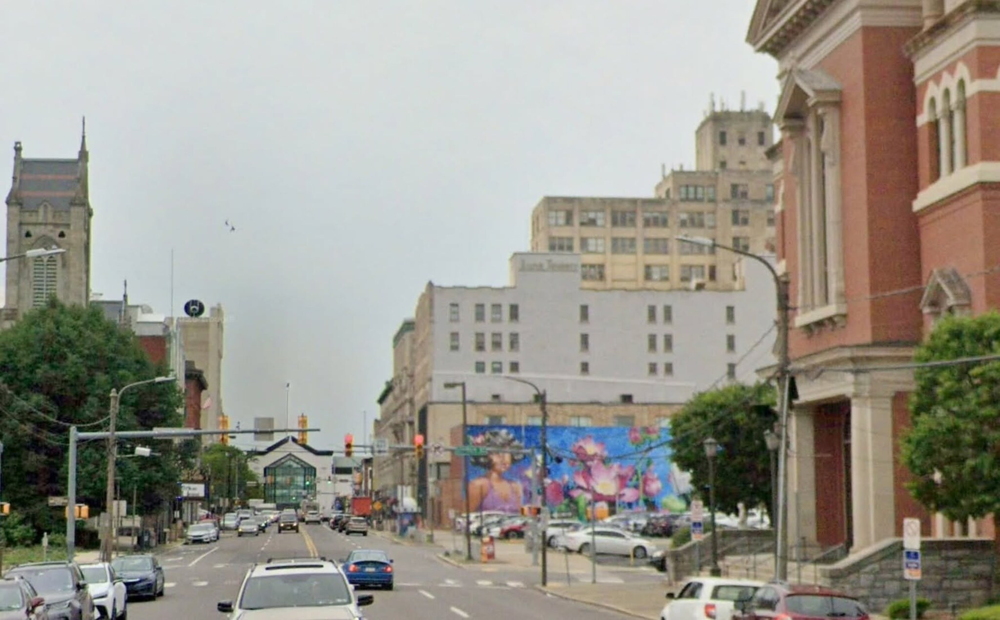
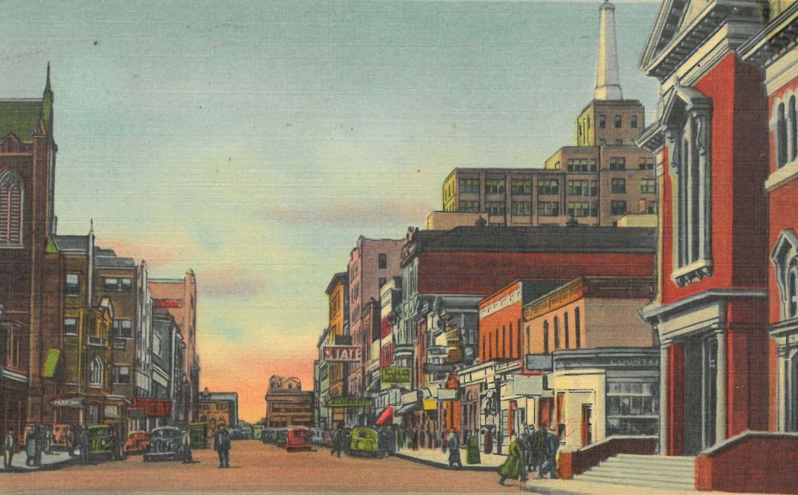

Scranton, Pennsylvania · Then & Now
Wyoming Avenue
Looking South
Two churches bookend the block, and both are still standing. Between them the card counts off a shopping and theatre district — the State and Comerford marquees, an A&P, Henry’s 5 & 10, the Savoy Restaurant, the Tip Toe Inn. Most of that stretch is a parking lot now.


Drag to compare · arrow keys to scrub
ThenLinen postcard, “Wyoming Avenue Looking South, Scranton, Pa.” (no. 46079), mid-century. Collection of the Lackawanna Historical Society.
NowGoogle Street View. Imagery © Google.
On the fitThe modern frame was shot from further back than the postcard, so the two churches line up but the background tower sits about 3% off. A closer Street View position would fix it.